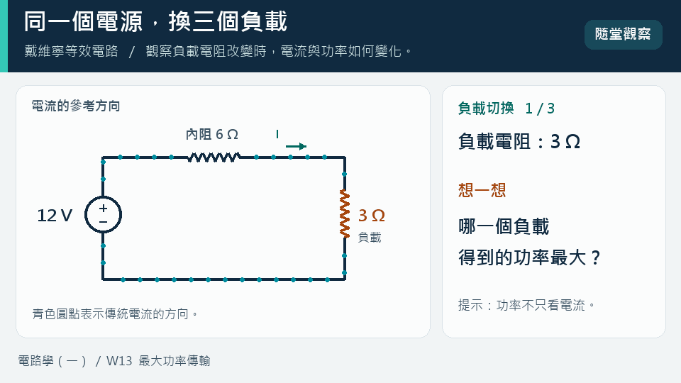
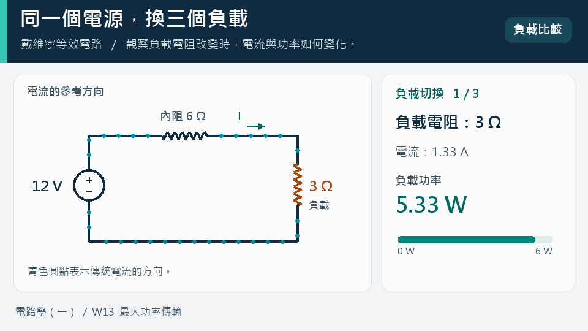
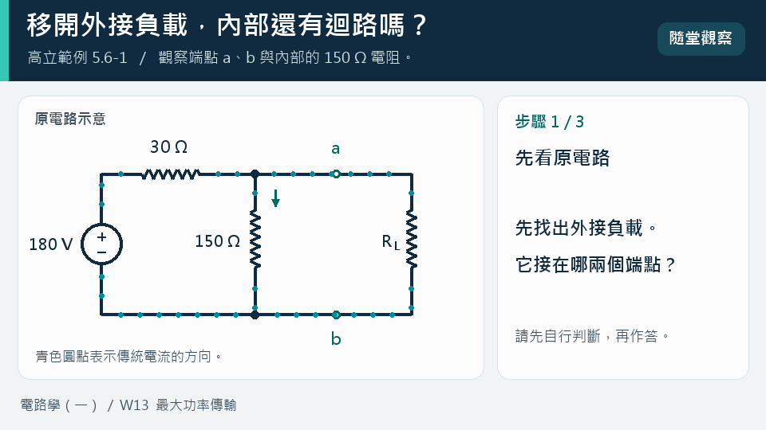
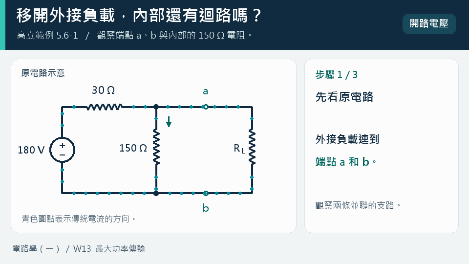

負載改變時，電流怎麼走？
先看電路、猜結果，再展開解答核對。兩段動畫都可自行播放或停止，不需要連網。
① 練習
3、6、12 Ω：哪個負載得到的功率最大？
電源是 12 V，內阻固定為 6 Ω。先想想：流過負載的電流越大，負載得到的功率就一定越大嗎？

看三種負載的計算與動畫
6 Ω 負載得到最多功率：6 W。
先用電源電壓除以「內阻＋負載」求出電流，再用電流平方乘以負載電阻求功率。
- 3 Ω：電流 12 ÷ 9 ≈ 1.33 A，負載功率約 5.33 W。
- 6 Ω：電流 12 ÷ 12 ＝ 1 A，負載功率是 6 W。
- 12 Ω：電流 12 ÷ 18 ≈ 0.67 A，負載功率約 5.33 W。
3 Ω 的電流最大，6 Ω 的功率卻最大。關鍵是負載和內阻相等。

② 拆下負載
拆下外接負載，裡面還有電流嗎？
找到右邊的端點 a、b。當外接負載拆掉後，從 180 V 電源沿著導線走一圈：還能經過哪兩個電阻回到電源？

看電流路徑與開路電壓
外接負載的電流是 0 A，內部迴路仍有 1 A。
保留原來的 30 Ω 與 150 Ω。兩者串聯，總電阻是 180 Ω，所以內部電流是 180 V ÷ 180 Ω＝1 A。
端點 a、b 和 150 Ω 電阻接在同一對節點，所以開路電壓是 1 A × 150 Ω＝150 V，a 點電位較高。
